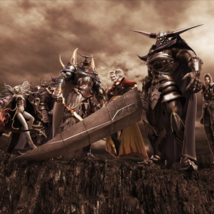

This is How You Fix RPG Sidequests
Ben Yatzhee Croshaw
18 October 2016 7:00 pm
For no particular reason I'd like to bring up the concept of sidequests. The essential component of an open world RPG, for without them it would not be an open world RPG at all; it would just be a plain old standard RPG with lots of trudging about unnecessary scenery.
But as essential as they are, sidequests are so often a source of annoyance. The classic example is the inevitable quest to clear giant rats out of Farmer Joe Dickcheese's basement that the Elder Scrolls games eventually started making ironic self-aware jokes about (although not to the extent that they stopped including the fucking things). Maybe that sort of quest is fine for a starting adventurer one step up from a village handyman, but not for the glittering world-saving hero with access to the ear of a king and the vagina of every eligible princess, warrior maiden and sexy witch in the land.
Since we've organically gotten onto the subject, I don't mind the mundane sidequesting in the Witcher 3 because the game's setting and story goes out of its way to establish that society looks down upon our main hero, and he goes about his trade like a blue collar contract worker, except he's slaughtering werewolves instead of unblocking the S-bend. But the sidequests in Witcher 3 had their own issue, which I mentioned in my review at the time: after a while, there were just too many that I wanted to do, and I was already overlevelled for the main plot missions to the point that the combat had stopped being challenging enough to be fun.
I bring all this up because a few weeks back I guested on Totalbiscuit's Co-Optional Podcast, and we had a little exchange in there that I've been dwelling on ever since. The topic was Dragon Age: Inquisition, whose sidequests are a particularly egregious example of wasting the destined hero's time because the main character is supposed to be the globally renowned leader of a powerful peacekeeping organisation, and they have absolutely no business running around personally collecting flowers for the headquarters' new bridal shop. It was the Mass Effect problem again of a main character being absolutely shit awful at delegating.
And it occurred to me while we were discussing it that Dragon Age: Inquisition was millimetres away from a logical solution to the sidequest mundanity annoyance. It comes down to two features of that game: the large number of party members, of which we can only employ two at a time while the rest hang around home base braiding each other's hair or something, and all the War Room stuff that allows us to send imaginary soldiers on imaginary quests that return rewards after a specific amount of real time. The same kind of thing Assassin's Creed did from Brotherhood onwards to let you actually feel like you're commanding a big organisation and not just three jackoffs who live in an unusually large house.
So here was my thinking: why not let us send party members that we're not using to complete sidequests offscreen? Not imaginary quests that are solely for completing offscreen, but the actual quests that the player could have completed but were left for too long and the reward is no longer worth it. Not quests we've just been given, so we can fob off all the gameplay; just the ones that in World of Warcraft would be coloured green or grey on the quest log.
I voiced these thoughts and the point was raised that doing the shitty Farmer Dickcheese quests is part of the experience, it's how we get a sense of the path that our character takes as they grow from humble beginnings to greatness. But I would argue that this benefit is lost after our character has achieved a certain level of greatness, and still has old sidequests cluttering up the log that no longer offer any significant growth. The only thing you can do at that point is quietly delete them from the list (if the game even lets you do that), and that doesn't feel like the heroic thing to do. There's no closure. You have to live with the knowledge that the rats might eat all of Farmer Dickcheese's grain and leave him and his family hungry this winter. And that Mrs. Plopknickers will never again see her little boy who mysteriously vanished near the dark forest.
But there is something heroic about sending a trusted friend - not trusted enough that I want them in my adventuring party but enough that I'll let them hang around our castle without worrying that they'll nick the silverware - to complete these quests in my place. It shows that we didn't forget Mrs. Plopknickers even when so many other things require our attention. So you'd send your unused party member, let's say Colin the dwarf, and after a certain amount of time he comes back to report the quest completed and Mrs. Plopknickers satisfied. He would then hand over half the gold/XP reward the quest offered, as well as any special items acquired from it, such as the late Mr. Plopknickers' best farming trousers.
The more I thought about this, the more sense it made. It clears up the quest log and means that Colin the dwarf has an opportunity to level up despite never being in your party. There is one glaring problem: many sidequests have story aspects and may even require you to make a choice that will affect the reward and future lives of those involved. Maybe you could have Colin report in and request that you make a decision by telegram, but that hardly shows trust in Colin's judgement. No, I don't think it would matter so much if you left the choice in Colin's hands; after all, there should be SOME penalty for fobbing the quest off instead of doing it yourself. Maybe when Colin comes back with his after-action report and you learn how interesting the quest got you could make a mental note to give it a try in your next playthrough.
So that was it, really; just a little idea to fix a common gameplay issue in a certain kind of game that's been preying on my mind lately. Maybe you, the readers, have thoughts on how to refine the concept further? If so, please feel free to tell them to someone who gives a shit.
Back to articles